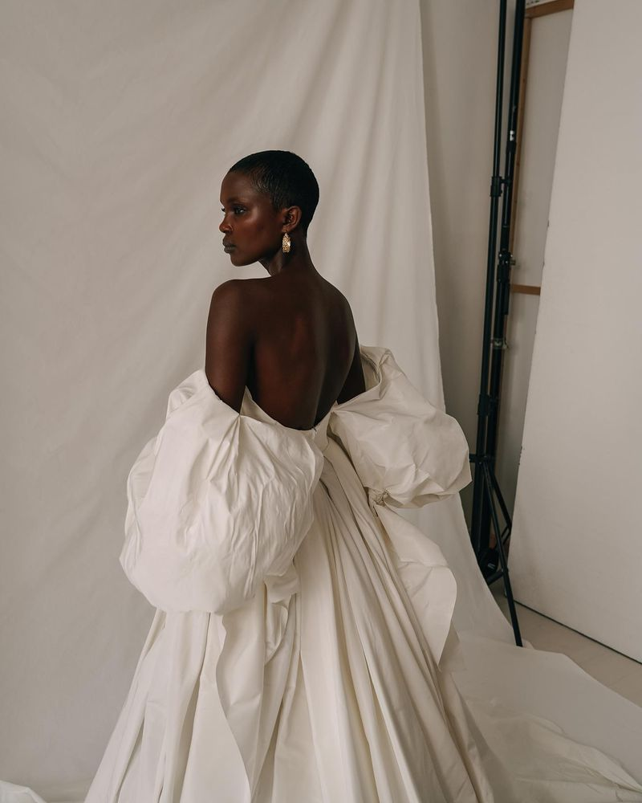
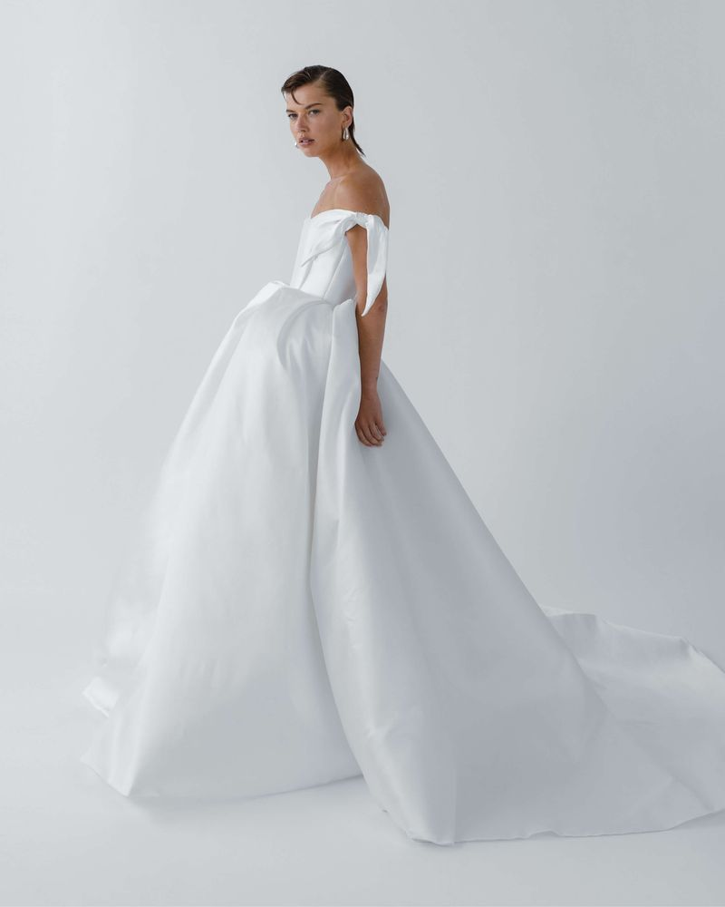
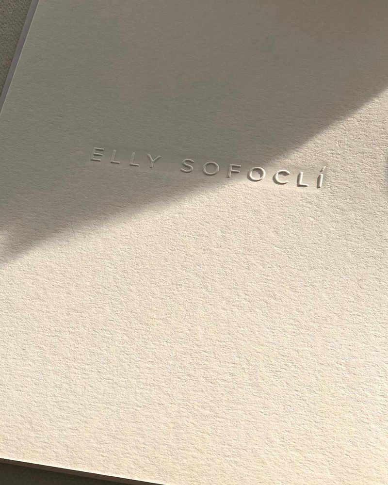
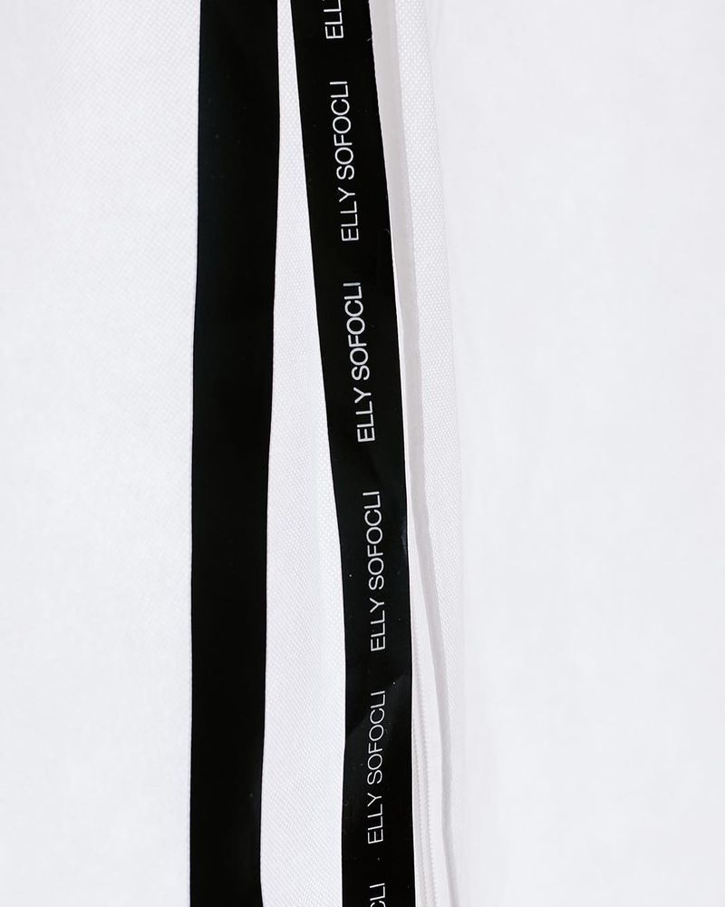
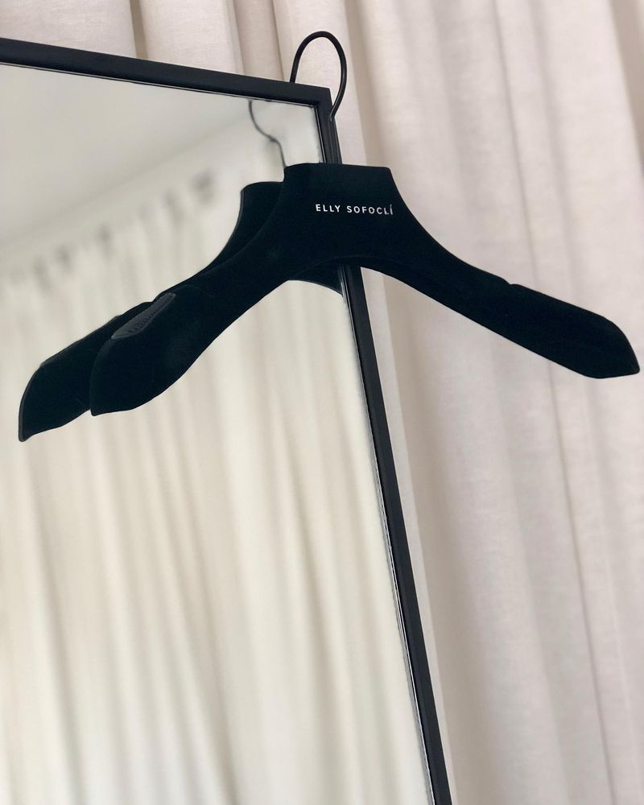
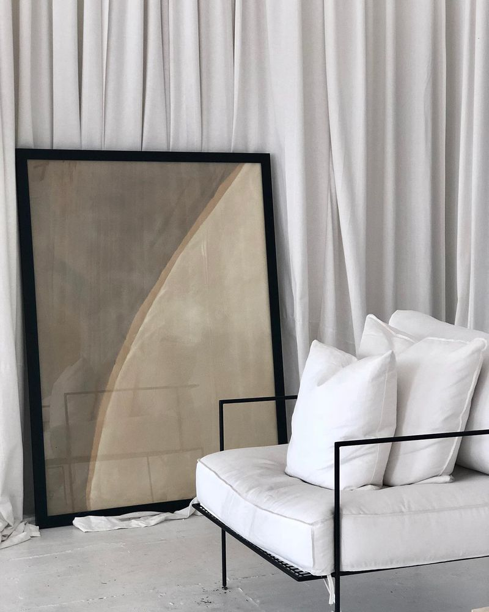
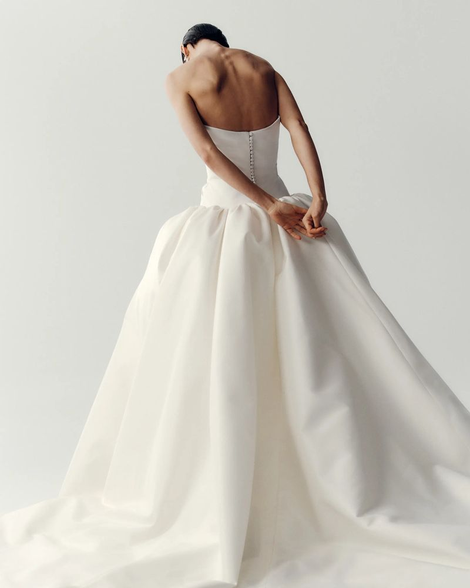
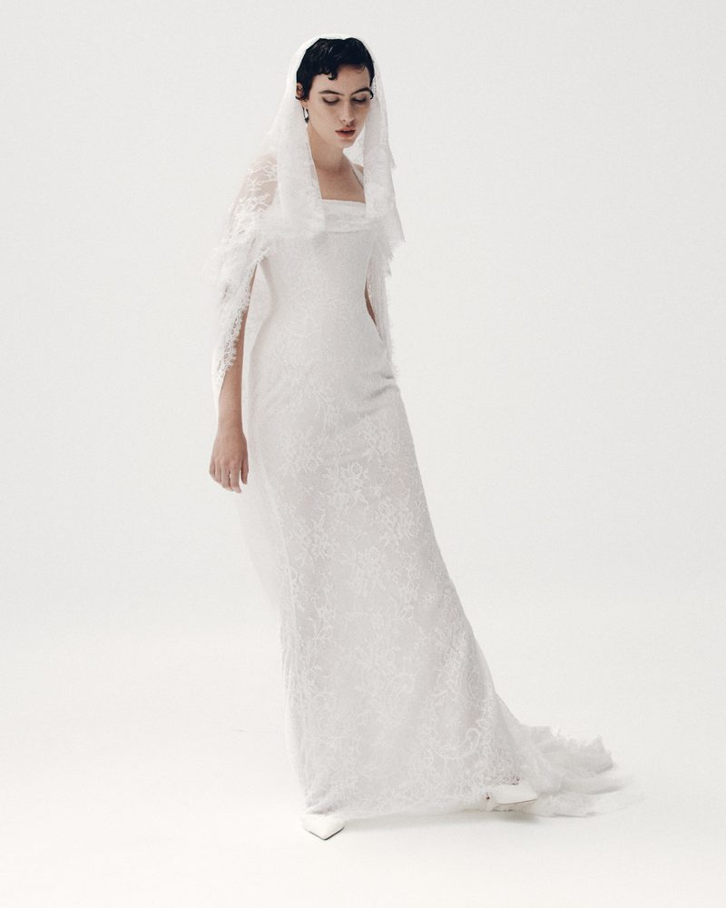

Elly Sofoclí
International Wholesale Development | Commercial Strategy | Brand & Digital Communications
Building an international wholesale proposition for a Melbourne bridal designer


Business context
Elly Sofoclí is a Melbourne-based bridal designer with an established retail presence and a distinctive approach to contemporary bridalwear.
While the business had developed its reputation through direct relationships with brides, international wholesale presented an opportunity to expand its reach through carefully selected bridal boutiques.
Entering these markets required more than exposure to prospective retailers.
The label needed a clear commercial proposition, an appropriate product offering and a consistent brand presentation that could support relationships with buyers in different countries.
The challenge
The commercial requirements of wholesale differ significantly from selling directly to consumers.
Prospective stockists needed to understand the collection, assess its relevance to their customers and evaluate the commercial terms of a potential partnership.
This required consideration of wholesale pricing, product selection, market suitability and the communication materials used to introduce the brand.
At the same time, the visual identity, website and content needed to present a consistent and credible expression of the label to both retail customers and international wholesale buyers.
The challenge was to establish the foundations for international growth while preserving the brand's premium positioning.
Our approach
Antimony worked across commercial development, brand identity, website delivery and communications.
Wholesale proposition & pricing
The programme included work on the wholesale pricing strategy and the selection of products suitable for the international stockist offering.
The intention was to present prospective partners with a proposition that made sense commercially and reflected the positioning of the brand.
Market research & partner identification
Potential international markets and bridal retailers were researched to identify suitable prospects.
The focus was on boutiques whose clientele, product positioning and retail environment represented a credible fit for the collection.
Business development & introductions
The programme supported the identification and initial approach to prospective stockists, helping establish introductions for the client's sales team to progress.
Brand identity & digital presentation
The studio developed work across brand identity, website design and development, and supporting content.
These assets helped establish a more consistent presentation of the label across digital channels and supported its introduction to new audiences.
Wholesale communications & creative delivery
Supporting communications and creative materials were coordinated to help present the collection, brand and commercial proposition to potential partners.




My contribution
I contributed to the development of the international wholesale programme, with particular involvement in commercial research, partner identification and early business development.
I worked on the wholesale pricing strategy and product offering, researched suitable international retailers and facilitated introductions to prospective stockists.
I was also responsible for managing the creation and rollout of supporting communications and design work, coordinating the studio's creative and digital specialists.
Once an introduction had been established, Elly's sales team took responsibility for the final commercial discussions and closing of wholesale accounts.
My role combined commercial thinking, relationship development and creative project management, helping connect the new wholesale proposition with the materials and relationships needed to take it to market.
Services & deliverables
- Wholesale market and competitor research
- Wholesale pricing strategy support
- Product and collection offering development
- International stockist research and identification
- Prospective partner introductions
- Business development support
- Brand identity development
- Website design and development
- Content and communications planning
- Wholesale communications and creative assets
- Creative project and stakeholder management
Outcome
- Queensland
- New York
- China
- South Korea
The programme established the commercial and communication foundations for international wholesale development.
It supported the introduction of the label to prospective stockists across multiple overseas markets and contributed to the development of international retail partnerships, with stockist relationships opened through the programme in Queensland, New York, mainland China and South Korea.
The brand's subsequent stockist network demonstrates an international presence across markets including the United States and Asia.
The commercial development programme was collaborative, with initial research and introductions supported through Antimony and final negotiations managed by the client's sales team.

